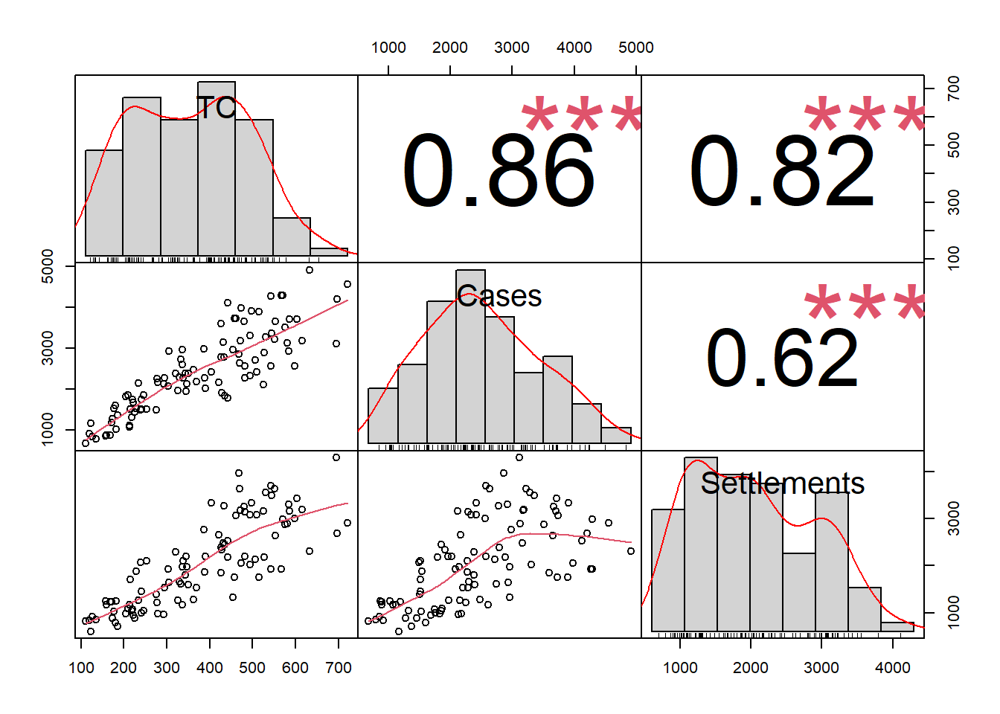
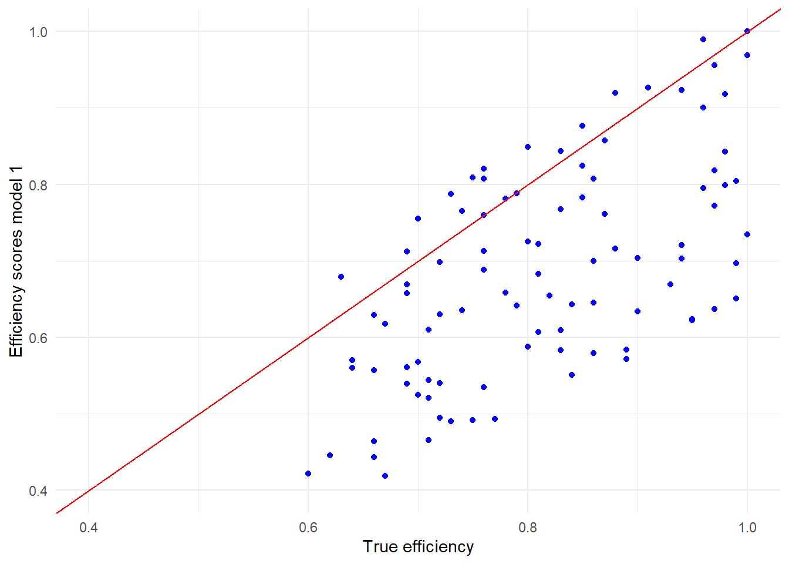
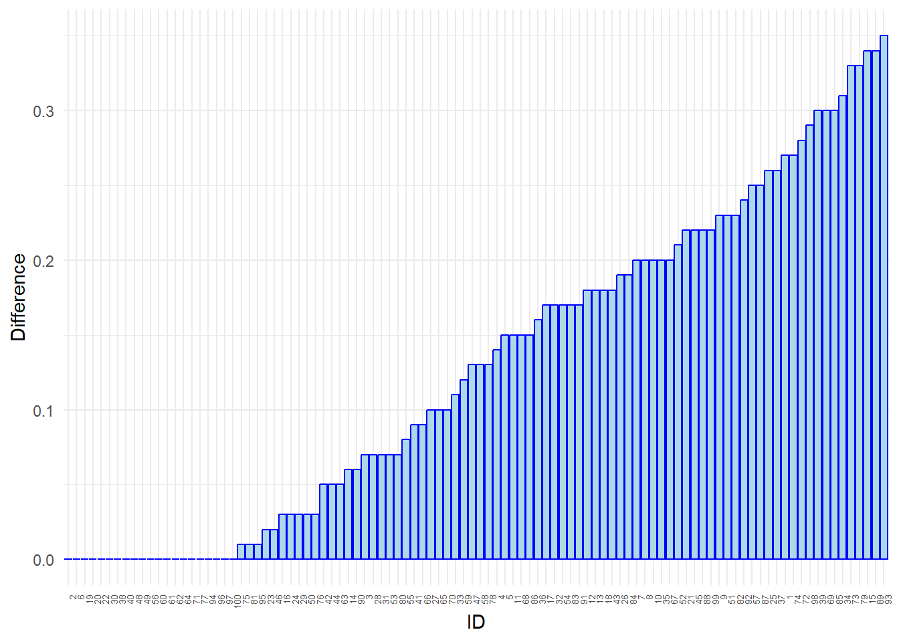
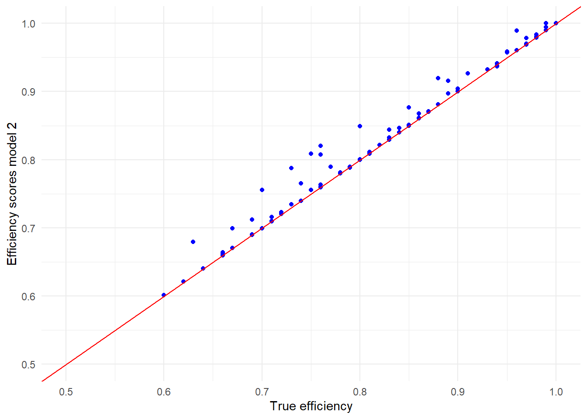
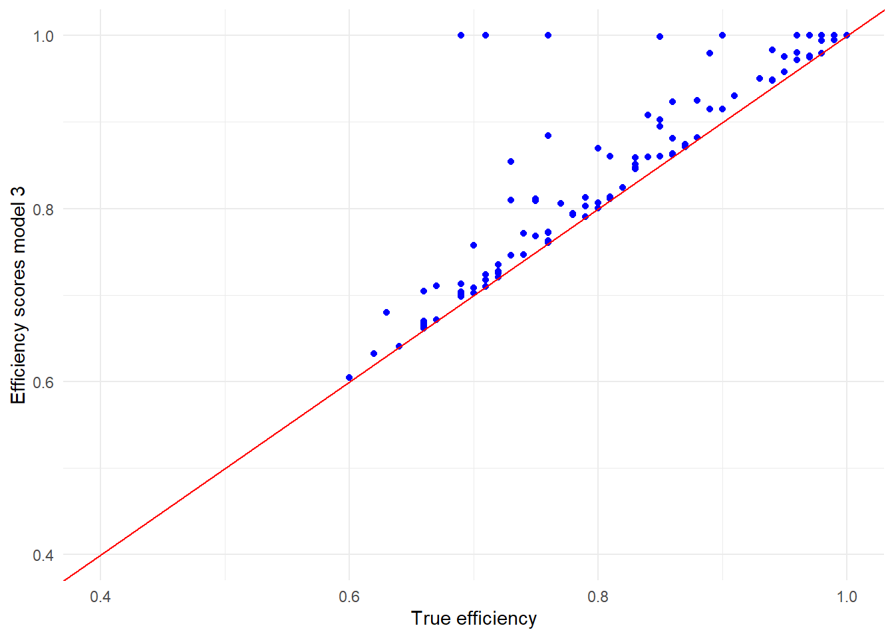

A benchmarking example in R
Introduction
In this post we will give you an example of a DEA benchmark performed in R. We will do this with simulated data.
In this case study we consider 100 courts. Courts handle ‘disputes’, which result in cases or settlements. Hence, settlements and cases are (perfect) substitutes. On the input side, courts incur costs. We consider several DEA models for benchmarking courts. The aim of this example is to learn how to apply DEA and to demonstrate that DEA is capable to reveal inefficiency. Therefore, we will first simulate our dataset of 100 courts, based on a certain assumption on inefficiency of each court (we will therefore know the’true efficiency’). And then we will use DEA to determine efficiency by means of DEA. By comparing DEA results to the assumed efficiency, we will establish whether DEA is capable to reveal true efficiency.
Packages
Simulation of data
We will first simulate some simple data of 100 Courts. The courts produce Solutions to disputes (“production”), which are “Cases” and “Settlements”
ID: just an identification number that we will not use: Total_Eff_Cost : Is the “real efficient total cost”, not observed in practice Efficiency: This is the “real efficiency score”, not observed in practice. Because we want to have some efficient firms for this examples we make sure that firms with id’s 1, 50 and 100 become efficient. Total cost: The total cost we observe and can use in our benchmark as input Cases: The number of verdicts written by each court Settlements: Cases that did not come to a verdict (e.g. plea guilty or compromise) Production: The total of cases and settlements
The data is simulated so that:
- all inefficiency leads to higher cost
- production is a (lineair) function of total efficient cost
- which means we have chosen for a CRS technology (see discussion later)
- settlements and cases are subsitutes
Code
set.seed(123)
id <- 1:100
d1 <- as.data.frame(id) %>%
mutate(Total_Eff_Cost = round(runif(100, 100, 500),0)) %>%
mutate(Efficiency_1 = round(runif(100, 0.6, 1 ),2)) %>%
mutate(Efficiency = ifelse(id == 1 | id ==50 | id ==100, 1, Efficiency_1)) %>%
mutate(TC = round(Total_Eff_Cost * (1/Efficiency), 0)) %>%
mutate(Production = round(15 * Total_Eff_Cost,0)) %>%
mutate(Share_cases = round(runif(100, 0.4, 0.7),2)) %>%
mutate(Cases = round(Share_cases * Production, 0)) %>%
mutate(Settlements = round((1-Share_cases) * Production, 0))We can inspect the observable data:
Code
d_CC <- d1 %>%
select(TC, Cases, Settlements)
suppressWarnings(chart.Correlation(d_CC))
Model 1 with 1 input (TC) and 1 output (Cases)
For this model we chose to run a CRS model with 1 input: TC (Total Cost) and 1 output (Cases).
Since Settlements and Cases are subsitutes, firms with relatively more Settlements should score worse.
Select our inputs and outputs
The Benchmarking package needs inputs and outputs to be matrices. As long as we want 1 input and 1 ouput, we just need to select the relevant variables.
Running the model
Now we can run the DEA model:
We need to chose the inputs and the outputs (as we have done above), the orientation (since we are interested in input minimization we chose “in”) and returns to scale (CRS)
Code
model_1 <- dea(mx, my, ORIENTATION = "in", RTS= "crs")Looking at the output
The package Benchmarking produces a list with some information.
Most interesting information are the scores and the peers.
Code
| efficiency_scores | Peers.peer1 | |
|---|---|---|
| Min. :0.4190 | Min. :100 | |
| 1st Qu.:0.5835 | 1st Qu.:100 | |
| Median :0.6812 | Median :100 | |
| Mean :0.6896 | Mean :100 | |
| 3rd Qu.:0.7901 | 3rd Qu.:100 | |
| Max. :1.0000 | Max. :100 |
As we can see, DMU with id 100 is peer for all firms.
Evaluation of the model
In reality we cannot evulate the model, but since we work with simulated data we can see how well our model performs by comparing the “real efficiency scores” with the estimated scores from the model.
First, we will add the efficiency scores to our initial dataset
Now we can plot the modelled inefficiency versus the real inefficiency
Code
ggplot(data = d1, aes(x= Efficiency, y=Model_1)) +
geom_point(color = "blue") +
geom_abline(intercept = 0, slope = 1, color = "red") +
xlim(0.4,1) +
ylim(0.4,1) +
xlab("True efficiency") +
ylab("Efficiency scores model 1") +
theme_minimal()
We can conclude that our model does not perform very good:
- most efficiency scores are underestimated
- a few are overstated
The reason is that we only took 1 output, while in our simulated dataset Courts produced 2 outputs.
Full model (1 input, 2 outputs) CRS
Select our inputs and outputs
We will run a model with 1 input (TC) and 2 outputs (Cases and Settlements). First we have to select the right variables as input and outputs. Please note: since we have 2 chosen 2 outputs, we should explicitly transform the dataframe into a matrix.
Running the model
The only change compared to the first model is the difference in outputs.
Code
model_CRS <- dea(mx_1, my_1, ORIENTATION = "in", RTS= "crs")Looking at the output
Again we can extract the efficiency scores and peers
Code
efficiency_scores_CRS <- model_CRS$eff
Peers <-as.data.frame(peers(model_CRS))
id <- 1: 100
d_CRS <- as.data.frame(id) %>%
mutate(efficiency_scores_CRS = efficiency_scores_CRS)
d_CRS_1 <- cbind(d_CRS, Peers)
kable(summary(d_CRS_1))| id | efficiency_scores_CRS | peer1 | peer2 | |
|---|---|---|---|---|
| Min. : 1.00 | Min. :0.6016 | Min. : 1.00 | Min. : 93.00 | |
| 1st Qu.: 25.75 | 1st Qu.:0.7206 | 1st Qu.: 1.00 | 1st Qu.:100.00 | |
| Median : 50.50 | Median :0.8093 | Median : 1.00 | Median :100.00 | |
| Mean : 50.50 | Mean :0.8189 | Mean : 30.07 | Mean : 98.28 | |
| 3rd Qu.: 75.25 | 3rd Qu.:0.9068 | 3rd Qu.: 93.00 | 3rd Qu.:100.00 | |
| Max. :100.00 | Max. :1.0000 | Max. :100.00 | Max. :100.00 | |
| NA | NA | NA | NA’s :31 |
We can that the efficiency scores -in general- have improved. The average score is up from around 69% to nearly 82%.
Code
id <- 1:100
Diff <- as.data.frame(id) %>%
mutate(Difference = round(d_CRS_1$efficiency_scores_CRS - d_eff$efficiency_scores , 2))
ggplot(data = Diff, aes(x = reorder(id, Difference), y = Difference)) +
geom_bar(stat = "identity", color = "blue", fill = "lightblue") +
theme_minimal() +
xlab("ID") +
theme(axis.text.x = element_text(angle = 90, hjust = 1, size = 5))
We can also have a closer look at the peers:
| id | efficiency_scores_CRS | peer1 | peer2 |
|---|---|---|---|
| 1 | 1 | 1 | NA |
| 50 | 1 | 1 | 100 |
| 93 | 1 | 93 | NA |
| 100 | 1 | 100 | NA |
We now see more peers. In the dataframe DMU’s with id’s 1, 100 and 93 are peer. DMU with ID 50 (has also score 1, but is not a peer)
Evaluation of the model
In reality we cannot evulate the model, but since we work with simulated data we can see how well our model performs by comparing the “real efficiency scores” with the estimated scores from the model.
First, we will add the efficiency scores to our initial dataset
Now we can plot the modelled inefficiency versus the real inefficiency
Code
ggplot(data = d1, aes(x= Efficiency, y=Model_CRS)) +
geom_point(color = "blue") +
geom_abline(intercept = 0, slope = 1, color = "red") +
xlim(0.5,1) +
ylim(0.5,1) +
xlab("True efficiency") +
ylab("Efficiency scores model 2") +
theme_minimal()
We can now conclude that the model performs reasonbly well.
Model 2 VRS
We will now estimate the same model with VRS.
Running the model
We only have to change the RTS (Returns to scale option) into VRS.
Code
model_VRS <- dea(mx_1, my_1, ORIENTATION = "in", RTS= "vrs")Again we can extract the efficiency scores and peers
Code
efficiency_scores_VRS <- model_VRS$eff
Peers <-as.data.frame(peers(model_VRS))
id <- 1: 100
d_VRS <- as.data.frame(id) %>%
mutate(efficiency_scores_VRS = efficiency_scores_VRS)
d_VRS_1 <- cbind(d_VRS, Peers)
kable(summary(d_VRS_1))| id | efficiency_scores_VRS | peer1 | peer2 | peer3 | |
|---|---|---|---|---|---|
| Min. : 1.00 | Min. :0.6047 | Min. : 1.00 | Min. : 18.00 | Min. : 24.00 | |
| 1st Qu.: 25.75 | 1st Qu.:0.7433 | 1st Qu.: 6.00 | 1st Qu.: 20.00 | 1st Qu.: 93.00 | |
| Median : 50.50 | Median :0.8491 | Median : 11.00 | Median : 50.00 | Median : 93.00 | |
| Mean : 50.50 | Mean :0.8413 | Mean : 22.33 | Mean : 57.78 | Mean : 92.91 | |
| 3rd Qu.: 75.25 | 3rd Qu.:0.9523 | 3rd Qu.: 26.00 | 3rd Qu.: 89.00 | 3rd Qu.:100.00 | |
| Max. :100.00 | Max. :1.0000 | Max. :100.00 | Max. :100.00 | Max. :100.00 | |
| NA | NA | NA | NA’s :13 | NA’s :34 |
The score is slightly higher than under CRS (from approx 82% to 84%)
We can also have a closer look at the peers:
| id | efficiency_scores_VRS | peer1 | peer2 | peer3 |
|---|---|---|---|---|
| 1 | 1 | 1 | NA | NA |
| 6 | 1 | 6 | NA | NA |
| 11 | 1 | 11 | NA | NA |
| 18 | 1 | 18 | NA | NA |
| 20 | 1 | 20 | NA | NA |
| 24 | 1 | 24 | NA | NA |
| 26 | 1 | 26 | NA | NA |
| 50 | 1 | 50 | NA | NA |
| 74 | 1 | 74 | NA | NA |
| 87 | 1 | 87 | NA | NA |
| 89 | 1 | 89 | NA | NA |
| 93 | 1 | 93 | NA | NA |
| 100 | 1 | 100 | NA | NA |
We see now much more firms with score 1, being their own peers.
Evaluation of the model
We can add the efficiency scores to our initial model
Now we can plot the modelled inefficiency versus the real inefficiency
Code
ggplot(data = d1, aes(x= Efficiency, y=Model_VRS)) +
geom_point(color = "blue") +
geom_abline(intercept = 0, slope = 1, color = "red") +
xlim(0.4,1) +
ylim(0.4,1) +
xlab("True efficiency") +
ylab("Efficiency scores model 3") +
theme_minimal()
As we see, in general firms improved (a bit). Especially large or small firms will be efficient be default.
Please note:
- VRS is always beneficial to the DMU’s
- The returns to scale choice may depend on:
- underlying technology
- possibility for firms to adjust their scale (by merging or splitting up)